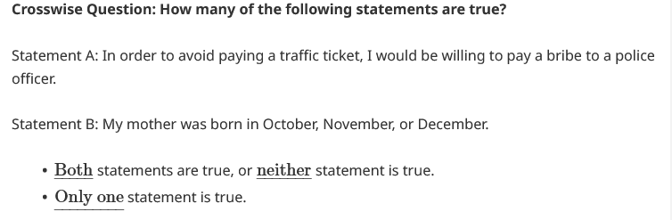
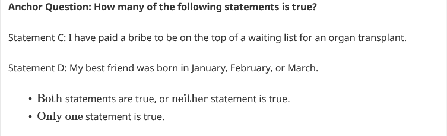
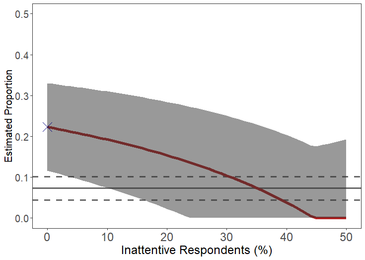
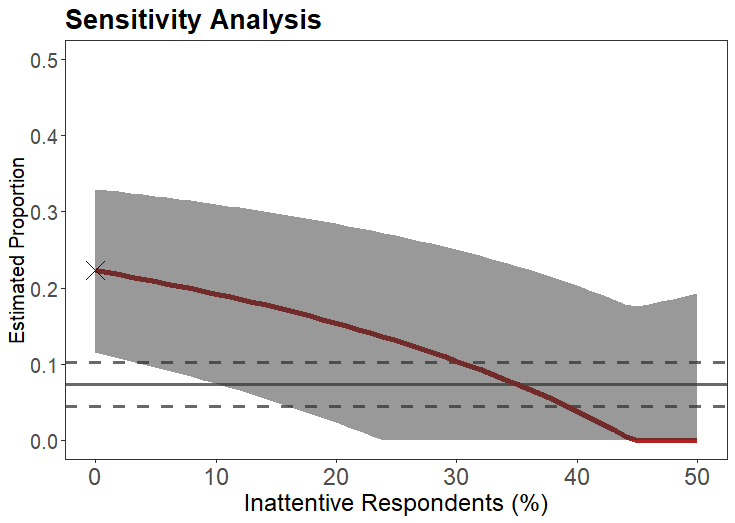
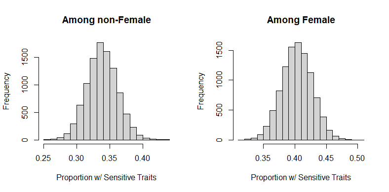
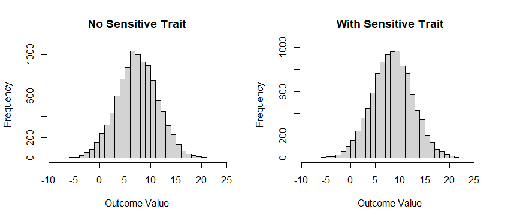

This R package implements the methods proposed by Atsusaka and Stevenson (2023), “A Bias-Corrected Estimator for the Crosswise Model with Inattentive Respondents,” Political Analysis, 31(1), 134-148. Our workhorse function is bc_est which generates a bias-corrected crosswise estimate of the proportion of individuals with sensitive attributes. cmBound applies our sensitivity analysis to crosswise data without the anchor question. cmreg and cmreg_p implement crosswise regressions in which the latent sensitive trait can be used as an outcome or as a predictor, respectively. cmpredict generates predicted proportions of having sensitive traits given specific covariate values with uncertainty estimates via parametric bootstrap, whereas cmpredict_p yields predicted values for a given outcome variable and specific covariate values in the presence and absence of sensitive traits. Simulated crosswise data are saved as cmdata, cmdata2, and cmdata3.
Installation
To install the latest development version of cWise directly from GitHub use:
library(devtools)
devtools::install_github("YukiAtsusaka/cWise")Design and Notation
The goal of our procedure is to (1) estimate the proportion of people who have sensitive attributes and behavior and (2) correct for bias based on inattentive survey takers.
Our design-based method requires two survey questions as follows:


Based on the four statements,
- Statement A: the sensitive item of interest
- Statement B: a non-sensitive item (whose prevalence is known to users)
- Statement C: an anchoring sensitive item (whose prevalence is set to 0)
- Statement D: an anchoring non-sensitive item (whose prevalence is known to users)
analysts will observe two outcome variables
- : whether person chooses the first option [Both or Neither] in the main question
- : whether person chooses the first option [Both or Neither] in the anchor question
To use our method, users only need to understand the following quantities. Among the four quantities, and are called design parameters because users have full control over their values.
| Notation | Description |
|---|---|
| Prob(A = Yes). This is our quantity of interest. | |
| Prob(B = Yes) | |
| Prob(D = Yes). This is set to 0 by default. | |
| Prob(D = Yes) |
Example
First, load the package.
The following examples use a toy data set (cmdata) that comes with the package. This data contains artificially generated information in a survey using the crosswise model.
data(cmdata)
head(cmdata)
#> Y A p p.prime
#> 1 1 1 0.15 0.15
#> 2 0 0 0.15 0.15
#> 3 0 0 0.15 0.15
#> 4 1 0 0.15 0.15
#> 5 0 1 0.15 0.15
#> 6 1 1 0.15 0.15Here, Y is a binary response in the crosswise question (Y=1 if TRUE-TRUE or FALSE-FALSE), and A is a binary response in the anchor question. p and p.prime are auxiliary probabilities in the crosswise and anchor questions, respectively. While researchers can directly input the values of p and p.prime in the function below (without including them in data), we include them for an illustrative purpose.
bc_est: Estimate the Prevalence of Sensitive Attributes
Generate a bias-corrected crosswise estimate using a crosswise data as follows:
prev <- bc_est(Y=Y, A=A, p=0.15, p.prime=0.15, data=cmdata)
prev
#> $Results
#> Estimate Std. Error 95%CI(Low) 95%CI(Up)
#> Naive Crosswise 0.1950 0.0144 0.1667 0.2233
#> Bias-Corrected 0.1054 0.0208 0.0649 0.1394
#>
#> $Stats
#> Attentive Rate Sample Size
#> 0.7729 2000The output is a list containing two elements. $Results is a matrix containing the point estimate, (estimated) standard error, the lower and upper bounds of 95% confidence intervals for the naive crosswise estimate and bias-corrected estimate, respectively.
$Stats is a vector containing the estimated attentive rate and sample size used for estimation. In this example, it is estimated that about 77% of respondents are attentive and followed the instructions under the design.
With Weighting
When using unrepresentative samples, it is crucial to consider weighting to estimate the prevalence of sensitive attributes at the (real) population of interest. Great news: sample weights can be easily incorporated in our bias-corrected estimator by specifying the optional argument weight as follows:
bc_est(Y=Y, A=A, weight=weight, p=0.15, p.prime=0.15, data=cmdata)
#> $Results
#> Estimate Std. Error 95%CI(Low) 95%CI(Up)
#> Naive Crosswise 0.1921 0.0144 0.1639 0.2204
#> Bias-Corrected 0.1097 0.0250 0.0596 0.1503
#>
#> $Stats
#> Attentive Rate Sample Size
#> 0.7888 2000
cmBound: Apply a Sensitivity Analysis
Apply a sensitivity analysis and generate sensitivity bounds for naive crosswise estimates.
p <- cmBound(lambda.hat=0.6385, p=0.25, N=310, dq=0.073, N.dq=310)
p
Since the output is a ggplot object, one can easily add additional information by using “+”. For example, to add a title with a specific font:
p <- p + ggtitle("Sensitivity Analysis") +
theme(plot.title = element_text(size=20, face="bold"))
p 
cmreg: Regression with the Latent Sensitive Trait as an Outcome
For an illustration, let’s load and see cmdata2 that contains the main and anchor response variables along with two covariates.
data(cmdata2)
head(cmdata2)
#> Y A female age p p.prime
#> 1 1 1 0 23 0.1 0.15
#> 2 1 1 1 31 0.1 0.15
#> 3 0 1 1 32 0.1 0.15
#> 4 1 0 1 19 0.1 0.15
#> 5 0 1 1 19 0.1 0.15
#> 6 0 1 1 25 0.1 0.15To run a crosswise regression, one can specify the model by writing a formula: Crosswise Response ~ var1 + ... + varN + Anchor Response as follows:
m <- cmreg(Y ~ female + age, anchor = A, p = 0.1, p.prime = 0.15,
data = cmdata2)
m
#> $Call
#> Y ~ female + age + A
#>
#> $Coefficients
#> Estimate Std. Error z score Pr(>|z|)
#> (intercept) -1.6509 0.4268 -3.868 0.000
#> female 0.2816 0.1427 1.974 0.048
#> age 0.0326 0.0133 2.450 0.014
#>
#> $AuxiliaryCoef
#> Estimate Std. Error z score Pr(>|z|)
#> (intercept) 0.1387 1.1347 0.122 0.903
#> female -0.2044 0.4119 -0.496 0.620
#> age 0.0595 0.0394 1.511 0.131$Coefficients shows the main results. They suggest that female and older respondents are more likely to possess the sensitive trait of interest. $AuxiliaryCoef lists estimated coefficients for being attentive in the crosswise model.
cmreg_p: Regression with the Latent Sensitive Trait as a Predictor
For a demonstration, let’s load cmdata3 that contains an outcome variable of interest (V), two covariates (female and age), and crosswise and anchor responses (Y and A).
data(cmdata3)
head(cmdata3)
#> V Y female age A p p.prime
#> 1 -0.38350925 1 0 23 1 0.1 0.15
#> 2 -0.05965305 1 1 31 1 0.1 0.15
#> 3 0.72655660 0 1 32 1 0.1 0.15
#> 4 0.79845870 1 1 19 0 0.1 0.15
#> 5 -0.19410532 0 1 19 1 0.1 0.15
#> 6 -0.34926673 0 1 25 1 0.1 0.15To run a regression with the sensitive trait as a predictor, one can specify the formula: Outcome ~ Cov1 + ... + CovN + CrosswiseResponse + AnchorResponse as follows:
m2 <- cmreg_p(V ~ age + female, crosswise = Y, anchor = A, p = 0.1,
p.prime = 0.15, data = cmdata3)
m2
#> $Call
#> V ~ age + female + Y + A
#>
#> $Coefficients
#> Estimate Std. Error z score Pr(>|z|)
#> (intercept) 0.0235 0.1478 0.159 0.874
#> age 0.0096 0.0048 2.006 0.045
#> female 0.2473 0.0520 4.753 0.000
#> Y 0.9858 0.0756 13.035 0.000
#>
#> $AuxiliaryCoef
#> Estimate Std. Error z score Pr(>|z|)
#> (intercept) -1.7338 0.4009 -4.324 0.000
#> age 0.0352 0.0126 2.794 0.005
#> female 0.2878 0.1356 2.123 0.034
#>
#> $AuxiliaryCoef2
#> Estimate Std. Error z score Pr(>|z|)
#> (intercept) 0.2481 1.0680 0.232 0.816
#> age 0.0548 0.0370 1.481 0.139
#> female -0.1075 0.3779 -0.284 0.776$Coefficients returns a list of coefficients that associate each covariate (including the sensitive trait of interest) with the outcome variable. Our primary quantities of interest are:
#> Y 0.9858 0.0756 13.035 0.000
cmpredict: Predicted Probabilities with Uncertainty Quantification
cmpredict computes predicted probabilities (proportions) of having sensitive attributes. Supply covariates by name through newdata, or use a named typical vector together with a named zval vector to create a prediction curve.
predictions <- cmpredict(out = m, typical = c(age = 30),
zval = c(female = 0, female = 1), draws = TRUE)
pred.nonfem <- attr(predictions, "draws")[1, ]
pred.female <- attr(predictions, "draws")[2, ]
par(mmfrow=c(1,2))
hist(pred.nonfem, main="Among non-Female", xlab="Proportion w/ Sensitive Traits")
hist(pred.female, main="Among Female", xlab="Proportion w/ Sensitive Traits")
cmpredict_p: Predicted Values of the Outcome Variable
cmpredict_p computes outcome predictions after cmreg_p. Covariates are supplied by name; it returns an absent-trait row and a present-trait row for each scenario.
pred <- cmpredict_p(out = m2, newdata = data.frame(age = 30, female = 1),
draws = TRUE)
pred.draws <- attr(pred, "draws")
par(mfrow=c(1,2))
hist(pred.draws[1,], main="No Sensitive Trait", xlab="Outcome Value", breaks=40)
hist(pred.draws[2,], main="With Sensitive Trait", xlab="Outcome Value", breaks=40)